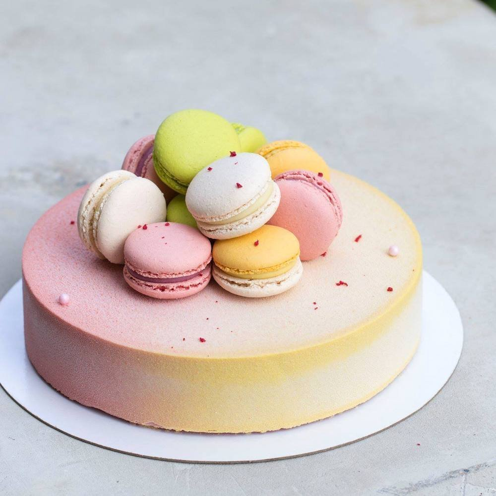

Акция на доставку
Уважаемые друзья! При заказе торта на сумму от 5500 рублей мы осуществляем БЕСПЛАТНУЮ ДОСТАВКУ по Санкт-Петербургу, а при меньшей сумме заказа, стоимость доставки составит всего 390 рублей. Подробности и условия Вы всегда можете уточнить у наших менеджеров по телефону.
Подарочные сертификаты
Дорогие друзья! В нашей кондитерской снова приятные новости. При любом заказе мы вручаем Вам совершенно бесплатно СКИДОЧНУЮ КАРТУ 10%, на любой последующий заказ. Скидки и акции не суммируются. С любовью команда Кондитерской "Торта Белла".
О нас
Уважаемые клиенты! Рады приветствовать Вас на нашем сайте! Мы занимаемся изготовлением тортов на любой праздник: Свадебные торты, Детские торты, Торты на День Рождения. Преимущество нашей Кондитерской в том, что мы изготовим любой торт представленный на нашем сайте, а так же эксклюзивные и креативные торты по Вашему эскизу. А самое главное, что мы используем только НАТУРАЛЬНЫ .
Волшебные, тающие, невероятно легкие. Это не о танцах, музыке или картинах. Кулинария – тоже искусство, особенно когда мы говорим о десертах. А когда речь заходит французских макарон (macarons), количество эпитетов сразу возрастает в разы.
Макарон, макаруны, макаронс - как только в России их не называют. Эти симпатичные крошки определенно заслуживают внимания.
История происхождения макарон по сей день остается не совсем ясной. Существует с десяток разных версий и легенд.
По одной из версий, они родились в Венеции в эпоху Возрождения, а спустя время появились во Франции благодаря Екатерине Медичи, которая на свою свадьбу с королем Генрихом II привезла во Францию итальянского кондитера.
Также существует легенда про двух монахинь. Сестры Маргарита и Мари-Элизабет придумали десерт из склеивающихся печенек, чтобы перехитрить строгие монастырские диетические правила, за что были прозваны "сестры Макарон".
Если вы еще не попробовали макарон, настоятельно рекомендуем вам сделать это! Это совершенно не то, что мы привыкли покупать в белорусских кондитерских и магазинах. Это особый, очень натуральный и очень живой вкус, который и отличает кондитерские изделия премиум-класса от всего «просто сладкого».